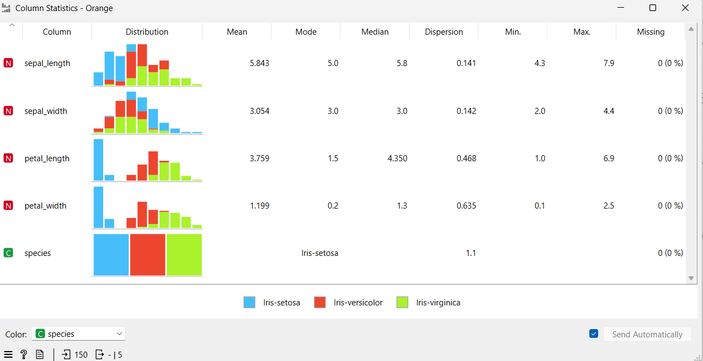
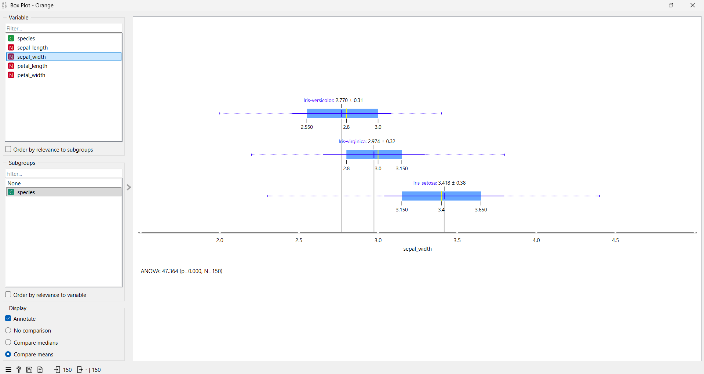
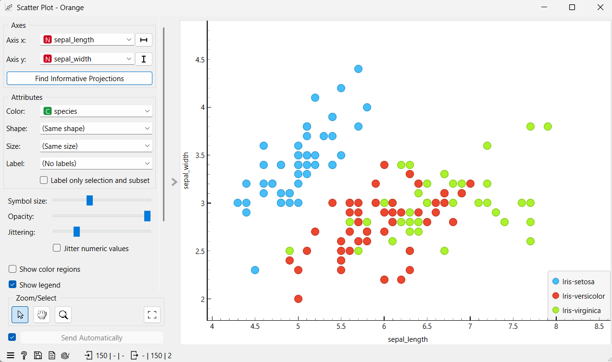
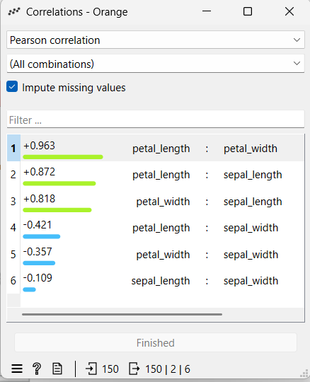
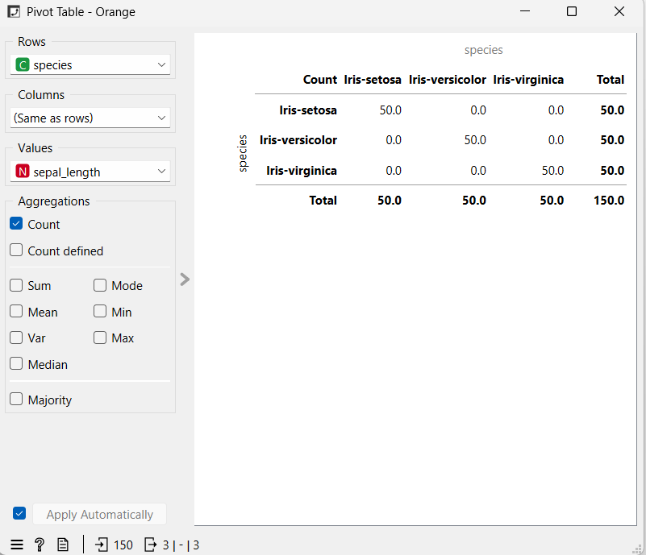

Eksplorasi Data Iris#
Halaman ini berisi analisis mendalam terhadap dataset Iris. Dataset ini merupakan dataset klasik dalam dunia data mining yang berisi karakteristik fisik dari tiga spesies bunga Iris.
1. Deskripsi Dataset#
Dataset Iris terdiri dari 150 sampel dari tiga spesies bunga Iris, yaitu:
Iris Setosa
Iris Versicolor
Iris Virginica
Setiap sampel memiliki empat fitur utama yang diukur dalam satuan sentimeter (cm):
Sepal Length: Panjang kelopak bunga.
Sepal Width: Lebar kelopak bunga.
Petal Length: Panjang mahkota bunga.
Petal Width: Lebar mahkota bunga.
import pandas as pd
# Membaca dataset
df = pd.read_csv('IRIS.csv')
# Menampilkan 10 data pertama
df.head(10)
| sepal_length | sepal_width | petal_length | petal_width | species | |
|---|---|---|---|---|---|
| 0 | 5.1 | 3.5 | 1.4 | 0.2 | Iris-setosa |
| 1 | 4.9 | 3.0 | 1.4 | 0.2 | Iris-setosa |
| 2 | 4.7 | 3.2 | 1.3 | 0.2 | Iris-setosa |
| 3 | 4.6 | 3.1 | 1.5 | 0.2 | Iris-setosa |
| 4 | 5.0 | 3.6 | 1.4 | 0.2 | Iris-setosa |
| 5 | 5.4 | 3.9 | 1.7 | 0.4 | Iris-setosa |
| 6 | 4.6 | 3.4 | 1.4 | 0.3 | Iris-setosa |
| 7 | 5.0 | 3.4 | 1.5 | 0.2 | Iris-setosa |
| 8 | 4.4 | 2.9 | 1.4 | 0.2 | Iris-setosa |
| 9 | 4.9 | 3.1 | 1.5 | 0.1 | Iris-setosa |
2. Statistik Deskriptif#
Statistik deskriptif digunakan untuk melihat ringkasan distribusi data dari setiap fitur numerik yang ada.
# Menampilkan statistik seperti mean, std, min, max, dan quartil
df.describe()
| sepal_length | sepal_width | petal_length | petal_width | |
|---|---|---|---|---|
| count | 150.000000 | 150.000000 | 150.000000 | 150.000000 |
| mean | 5.843333 | 3.054000 | 3.758667 | 1.198667 |
| std | 0.828066 | 0.433594 | 1.764420 | 0.763161 |
| min | 4.300000 | 2.000000 | 1.000000 | 0.100000 |
| 25% | 5.100000 | 2.800000 | 1.600000 | 0.300000 |
| 50% | 5.800000 | 3.000000 | 4.350000 | 1.300000 |
| 75% | 6.400000 | 3.300000 | 5.100000 | 1.800000 |
| max | 7.900000 | 4.400000 | 6.900000 | 2.500000 |
3. Visualisasi Menggunakan Orange#
Untuk memperkuat pemahaman secara visual, berikut adalah hasil eksplorasi menggunakan tool Orange Data Mining.
A. Statistik Kolom (Column Statistics)#
Column Statistics memberikan gambaran umum mengenai distribusi setiap fitur numerik. Kita bisa melihat nilai rata-rata (Mean), nilai tengah (Median), dan nilai yang paling sering muncul (Mode) untuk memastikan kualitas data.

B. Box Plot (Diagram Kotak)#
Box Plot adalah grafik yang digunakan untuk melihat persebaran data, nilai pusat, serta mendeteksi adanya data pencilan (outliers). Garis di tengah kotak menunjukkan median, sedangkan panjang kotak menunjukkan rentang data utama. Pada data IRIS, Box Plot mempermudah kita melihat perbedaan ukuran kelopak atau mahkota bunga di antara ketiga spesies secara kontras.

C. Scatter Plot (Diagram Sebar)#
Scatter Plot adalah grafik yang digunakan untuk melihat hubungan antara dua data angka. Grafik ini menampilkan titik-titik yang mewakili pasangan nilai dari dua variabel. Dari pola titik tersebut, kita bisa melihat apakah kedua variabel memiliki hubungan (misalnya naik bersama, turun, atau tidak berhubungan). Pada data IRIS, scatter plot sangat efektif digunakan untuk melihat hubungan antara panjang sepal dan panjang petal untuk membedakan kelompok spesies secara visual.

D. Analisis Korelasi (Correlations)#
Korelasi adalah metode statistik untuk mengukur seberapa kuat hubungan antara dua variabel. Nilai korelasi berkisar antara -1 hingga +1. Nilai yang mendekati +1 (seperti pada korelasi Petal Length dan Petal Width) berarti kedua variabel memiliki hubungan positif yang sangat kuat; jika ukuran panjang mahkota naik, maka lebarnya pun cenderung naik.

E. Pivot Table#
Pivot Table digunakan untuk merangkum atau mengelompokkan data berdasarkan kategori tertentu. Dalam laporan ini, Pivot Table membantu memastikan bahwa jumlah data untuk setiap spesies bunga Iris adalah seimbang, yaitu masing-masing terdiri dari tepat 50 sampel.
